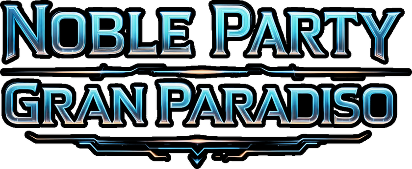
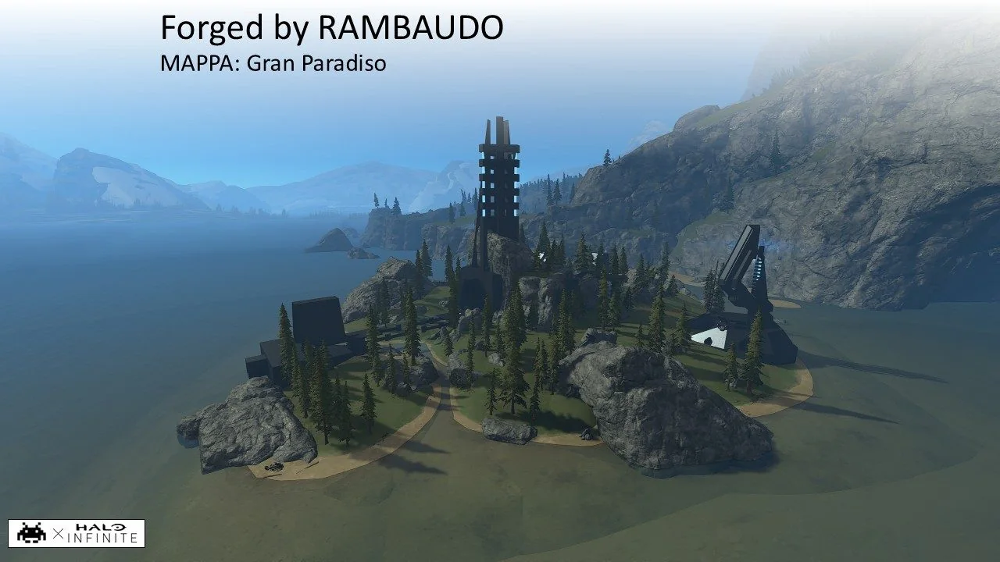
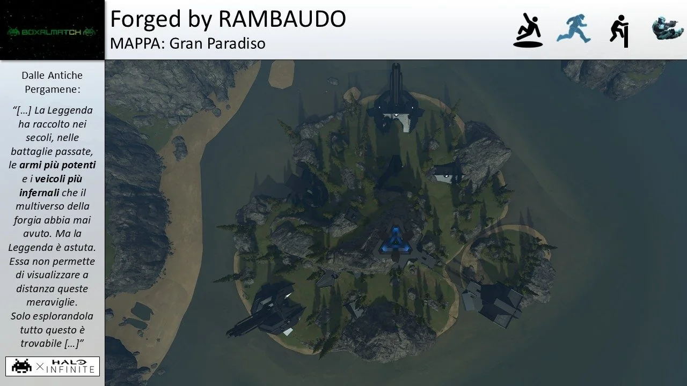
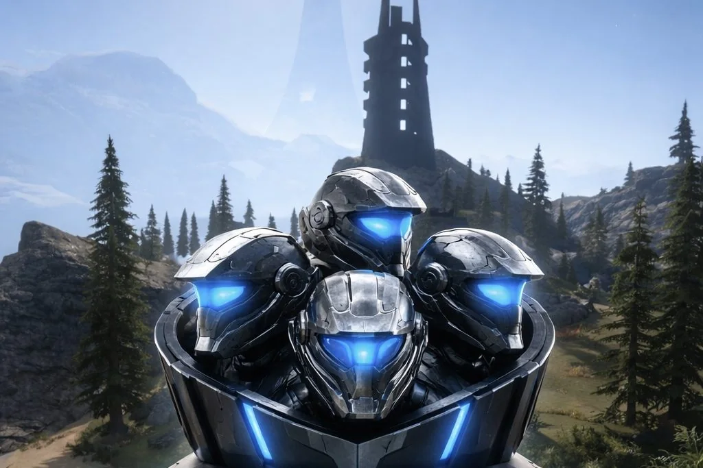
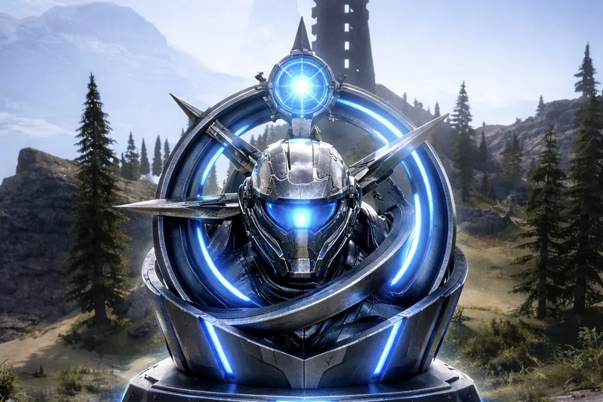

MappaMap
Qui troverete la Mappa usasta per l'evento Noble Party Gran Paradiso. Here you'll find the Map used for the Noble Party Gran Paradiso event.
❮
Questa è la mappa forgiata da Rambaudo su Halo Infinite in collaborazione con Halo Fun Time. Ogni partita di questo evento si è svolto su questa mappa. Guardala sul nostro canale youtube qui. This is the map forged by Rambaudo in Halo Infinite in collaboration with Halo Fun Time. Every match of this event was played on this map. Watch it on our YouTube channel here.


Quando ancora i Multi-Teams non erano ufficiali su Halo Infinite, su questa mappa, con un sistema di Terminali, permetteva una volta entrati in partita di cambiare team fino a 8 teams. Ad oggi, scegliere uno degli 8 teams è possibile farlo prima di iniziare una partita. La mappa presenta ogni tipo di arma standard e potenziata e ogni tipo di veicolo. Cerca "Gran Paradiso" su Halowaypoint. Back when Multi-Teams weren't yet official in Halo Infinite, this map used a Terminal system that let you switch team, up to 8 teams, once you were already in the match. Today, picking one of the 8 teams can be done before starting a match. The map features every type of standard and power weapon and every type of vehicle. Search for "Gran Paradiso" on Halowaypoint.

I Teams di questo Evento li trovi suYou can find this Event's Teams on Teams.

La storia dietro a questo Evento la trovi suThe story behind this Event is on Storia.